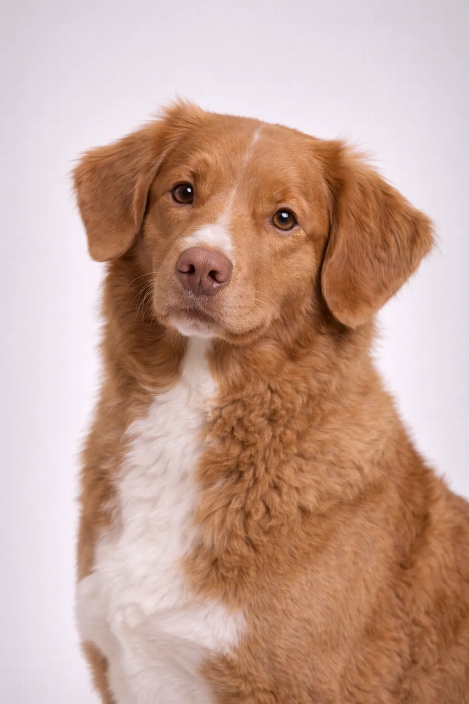

Nova Scotia Duck Tolling Retriever
Çok zeki ve memnun etmeye hevesli, eğitimi keyifli hale getirir.
17-21 in
37-51 lbs
Irk Değerlendirmeleri
Mizaç
Genel Bakış
'Toller', en küçük retriever ırkı olmasına karşın enerji ve zeka dolu bir köpektir. Oyuncu hareketleriyle su kuşlarını cezbetmek ve almak için yetiştirilmiştir.
Mizaç
Nova Scotia Duck Tolling Retriever, zeki, uyanık ve sevgi dolu yapısıyla tanınır. Çocuklarla mükemmel bir uyum sağlar ve harika bir aile köpeği olur. Zekâsı ve memnun etme isteği eğitimi keyifli kılar. Erken sosyalleşme, onların dengeli ve uyumlu bir evcil hayvan olarak gelişmesine yardımcı olur.
Sağlık
12-14 yıl yaşam süresiyle genel olarak sağlıklı bir ırktır. Eklem sorunları yaygın endişeler arasındadır. Düzenli veteriner kontrolleri ve önleyici bakım önemlidir. Sağlıklı bir kilo korumak birçok sağlık sorununu önlemeye yardımcı olur.
Egzersiz
Günlük en az bir saatlik yoğun egzersiz gerektiren yüksek enerjili bir ırktır. Açık hava aktivitelerinden zevk alan aktif ailelerle birlikte yaşamaktan mutluluk duyar. Eğitim ve bulmaca oyunları aracılığıyla zihinsel uyarım da en az egzersiz kadar önemlidir. Yeterli egzersiz yapılmadığında davranış sorunları gelişebilir.
Irk Değerlendirmeleri
Mizaç
Genel Bakış
'Toller', en küçük retriever ırkı olmasına karşın enerji ve zeka dolu bir köpektir. Oyuncu hareketleriyle su kuşlarını cezbetmek ve almak için yetiştirilmiştir.
Mizaç
Nova Scotia Duck Tolling Retriever, zeki, uyanık ve sevgi dolu yapısıyla tanınır. Çocuklarla mükemmel bir uyum sağlar ve harika bir aile köpeği olur. Zekâsı ve memnun etme isteği eğitimi keyifli kılar. Erken sosyalleşme, onların dengeli ve uyumlu bir evcil hayvan olarak gelişmesine yardımcı olur.
Sağlık
12-14 yıl yaşam süresiyle genel olarak sağlıklı bir ırktır. Eklem sorunları yaygın endişeler arasındadır. Düzenli veteriner kontrolleri ve önleyici bakım önemlidir. Sağlıklı bir kilo korumak birçok sağlık sorununu önlemeye yardımcı olur.
Egzersiz
Günlük en az bir saatlik yoğun egzersiz gerektiren yüksek enerjili bir ırktır. Açık hava aktivitelerinden zevk alan aktif ailelerle birlikte yaşamaktan mutluluk duyar. Eğitim ve bulmaca oyunları aracılığıyla zihinsel uyarım da en az egzersiz kadar önemlidir. Yeterli egzersiz yapılmadığında davranış sorunları gelişebilir.
⦿ Bu Irk Size Uygun mu?
✓ En Uygun
- Aktif aileler
- Köpek sporu tutkunları
- Avcılar
✗ İdeal Değil
- Hareketsiz sahipler
- Sessiz köpek isteyenler
Değerlendirmemiz: 'Toller', en küçük retriever ırkı olmasına karşın enerji ve zeka dolu bir köpektir. Oyuncu hareketleriyle su kuşlarını cezbetmek ve almak için yetiştirilmiştir.